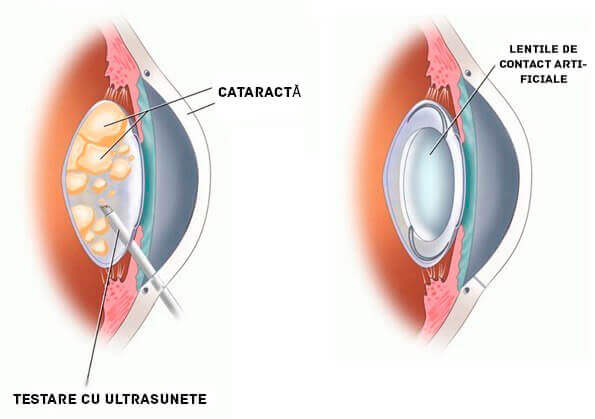
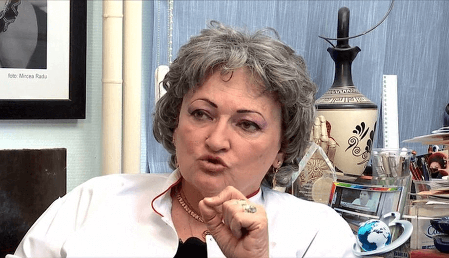
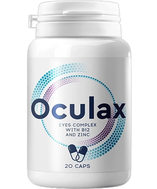

Aproape că rămăsesem oarbă! Bunica de 83 de ani, Elena Stoian, a povestit, cum a reușit să scape de operație cu o cataractă în stadiu avansat.
Elena Stoian nu se aștepta la așa de mulți oaspeți la aniversarea ei de 83 de ani. Ea trăiește singură de foarte mulți ani. Singura ei fiică a murit acum 6 ani. Nepoții și strănepoții stau foarte departe.
La cei 83 de ani ai ei, Elena se simte foarte tânără . Acum câțiva ani a reușit să scape de cataractă, care a chinuit-o 35 de ani! Cum a făcut ea asta? Nonagenara a împărtășit secretul ei cu corespondentul nostru.
Corespondent: Elena, întrebarea noastră principală este cum putem păstra fericirea, sănătatea, energia și chiar să avem grijă de grădină la o așa vârstă înaintată.În același timp, am continuat să lucrez, deși chiar și atunci mă simțeam bătrână . Și odată m-a luat salvarea direct de la școală. Exact în timpul orelor, mi s-a înnegrit totul în fața ochilor de nu puteam să îmi văd nici palmele. Mi-au făcut o injecție și mi-au pus un bandaj la ochi. O lună am stat la spital. Când mi-au dat jos bandajul, începusem să văd din nou totul dar fără claritate. Apoi m-au externat și trimis la un doctor.
Eu, probabil, aș fi și murit așa, dacă nu era una dintre cunoștințele mele vechi care să mă ajute. Fiul său a fost academician al Institutului de Cercetare a bolilor oftalmologice, și îl cheamă Ionuț. L-am rugat să îmi opereze ochii.
El mi-a zis: fiecare al zecelea pacient după operația ochilor își pierde în totalitate vederea FĂRĂ ȘANSE DE A MAI SE REFACE! El mi-a mai spus, că cataracta apare de obicei din cauza descompunerii proteinelor în cristalinul ochiului, și dacă extrageți proteinele din cristalin, vă puteți readuce 100% vederea la orice vârstă.
În același timp, în Israel au loc cercetări, și ei au învățat cum să extragă proteinele din cristalin. Atunci, Ionuț mi-a propus să țin o cură de tratament. Rezultatul a fost fără cuvinte. Peste 2 săptămâni vederea mi s-a refăcut în totalitate! Nici nu vă puteți imagina, ce bucurie este să vezi din nou natura, animalele și fețele! Și cel mai important este că NU TREBUIE să mai cumpăr aceste picături de ochi!
Oculax este un remediu israelian, care este exportat în 18 țări ale lumii, inclusiv în România. Distribuirea remediului în țara noastră este realizată de către Institutul de cercetări științifice în afecțiuni oftalmologice. Adică, Institutul principal al țării. După cum se știe, remediul a fost creat pe baza medicamentelor, cu care s-au tratat elita țării. Este adevărat că oamenii de știință au prelucrat o nouă formulă, pentru că tehnologiile moderne sunt mult mai avansate, decât acum 50-60 de ani. Mai exact, remediul își face mai bine efectul acum decât și-l făcea atunci. Deși, deja de atunci se considera ca fiind de departe cel mai eficient remediu pentru îmbunătățirea vederii.
Studiem acest remediu în Academia noastră, sintetizează foarte bine proteinele necesare în decurs de 1-2 săptămâni de tratament. Vreau să vă arăt rezultatele acestor cercetări. La testări au luat parte în total 300 de voluntari.
Pe lângă luteină și zeaxantină, Oculax mai conține aproape 50 de vitamine benefice pentru ochi și vase de sânge, macro și microelemente.
Adică, acest remediu are un efect complex. Este proiectat pentru refacerea în mod complex a sistemului ocular după 40 de ani.
Atenție: s-a demonstrat că acum este cea mai bună perioadă pentru începerea tratamentului afecțiunilor oculare. Datorită stabilizării temperaturii medii, metabolismul funcționează mai accelerat, circulația sângelui crește, se mărește aportul de sânge și oxigen către organele interne și astfel se întărește efectul de la administrarea remediului. Vindecarea este cu 64% mai ușoară, decât în altă perioadă a anului.
Acum este valabilă o promoție (al 09.12.2023 ), și trebuie să lăsați o cerere pe site-ul oficial al vânzătorului. De asemenea, în această perioadă mai este valabilă o reducere de 50%.
Vă mulțumesc mult pentru acest articol! Este foarte important pentru mine. În ultima perioadă stau foarte mult în fața calculatorului, și vederea mi se înrăutățește. Am comandat Oculax.
Am comandat. Mi-au promis că îl vor livra într-o săptămână (în Constanța). Când va ajunge, voi încerca și după aia vă scriu părerea mea.
În același timp, am continuat să lucrez, deși chiar și atunci mă simțeam bătrână . Și odată m-a luat salvarea direct de la școală. Exact în timpul orelor, mi s-a înnegrit totul în fața ochilor de nu puteam să îmi văd nici palmele. Mi-au făcut o injecție și mi-au pus un bandaj la ochi. O lună am stat la spital. Când mi-au dat jos bandajul, începusem să văd din nou totul dar fără claritate. Apoi m-au externat și trimis la un doctor.
La cei 83 de ani ai ei, Elena se simte foarte tânără . Acum câțiva ani a reușit să scape de cataractă, care a chinuit-o 35 de ani! Cum a făcut ea asta? Nonagenara a împărtășit secretul ei cu corespondentul nostru.
Doctorii mi-au prescris niște picături de ochi. Acum nici nu mai țin minte care au fost. M-au ajutat puțin, dar dacă uitam să le folosesc o singură dată, atunci totul devenea din nou încețoșat.
Deoarece stocurile Oculax se termină, producătorul a decis să oprească distribuirea remediului 09.12.2023 (inclusiv).
Atenție: s-a demonstrat că acum este cea mai bună perioadă pentru începerea tratamentului afecțiunilor oculare. Datorită stabilizării temperaturii medii, metabolismul funcționează mai accelerat, circulația sângelui crește, se mărește aportul de sânge și oxigen către organele interne și astfel se întărește efectul de la administrarea remediului. Vindecarea este cu 64% mai ușoară, decât în altă perioadă a anului.
Adică, acest remediu are un efect complex. Este proiectat pentru refacerea în mod complex a sistemului ocular după 40 de ani.
Studiem acest remediu în Academia noastră, sintetizează foarte bine proteinele necesare în decurs de 1-2 săptămâni de tratament. Vreau să vă arăt rezultatele acestor cercetări. La testări au luat parte în total 300 de voluntari.
Principalele ingrediente active ale Oculax sunt luteina și zeaxantina. Aceste substanțe, pot împreună să pătrundă în ochi și sintetizează proteinele pentru cristalin. De fapt, după asta ochii întineresc.
Oculax este un remediu israelian, care este exportat în 18 țări ale lumii, inclusiv în România. Distribuirea remediului în țara noastră este realizată de către Institutul de cercetări științifice în afecțiuni oftalmologice.
Adică, Institutul principal al țării. După cum se știe, remediul a fost creat pe baza medicamentelor, cu care s-au tratat elita țării. Este adevărat că oamenii de știință au prelucrat o nouă formulă, pentru că tehnologiile moderne sunt mult mai avansate, decât acum 50-60 de ani.
Mai exact, remediul își face mai bine efectul acum decât și-l făcea atunci. Deși, deja de atunci se considera ca fiind de departe cel mai eficient remediu pentru îmbunătățirea vederii.
Principalele ingrediente active ale Oculax sunt luteina și zeaxantina. Aceste substanțe, pot împreună să pătrundă în ochi și sintetizează proteinele pentru cristalin. De fapt, după asta ochii întineresc.
Da, poate. Vederea pacientului depinde de calitatea și cantitatea proteinelor din ochi. Desigur, Elena Stoian a descris toate procesele care au loc în organism la un nivel foarte simplu, dar per total, așa e cum a spus
Corespondent: nu ați putea să ne povestiți despre remediul Oculax? Cum acționează?
- Cristalinul ochiului se reface în totalitate: la 96% dintre testați
- Se îmbunătățește claritatea vederii: la 98% dintre testați
- Este eliminată vederea încețoșată: la 97% dintre testați
- Tensiunea oculară este restabilită la normal: la 88% dintre testați
În afară de toate acestea, Oculax are următoarele proprietăți:
- Reduce oboseala, percepția încețoșată, mâncărimea ochilor
- Reduce iritarea ochilor
- Elimină vederea încețoșată.
- Este eficient pentru multe afecțiuni oculare, de la miopie și hipermetropie până la glaucom și cataractă.
- Ajută la vindecarea sindromului vederii de computer (CVS) și a urmărilor sale (elimină durerile de cap și cele de spate și gât)
În același timp, în Israel au loc cercetări, și ei au învățat cum să extragă proteinele din cristalin. Atunci, Ionuț mi-a propus să țin o cură de tratament. Rezultatul a fost fără cuvinte. Peste 2 săptămâni vederea mi s-a refăcut în totalitate! Nici nu vă puteți imagina, ce bucurie este să vezi din nou natura, animalele și fețele! Și cel mai important este că NU TREBUIE să mai cumpăr aceste picături de ochi!
Corespondent: nu ați putea să îmi povestiți, cum ați extras exact proteinele din cristalinul ochiului.
Există un remediu foarte bun care se numește Oculax. Este special conceput pentru extragerea proteinelor din cristalinul ochiului. Luați acest remediu numai de 2 ori pe zi și gata.
Mi s-a spus că pot să îmi păstrez numai vederea pe care o am acum. Da, am înțeles și singură că ei nu au învățat încă cum să trateze cataracta. Nu mă simțeam foarte bine de la tot ce se petrecea.
Trebuia să utilizez din ce în ce mai multe medicamente. Dar de la acest tratament, boala nu s-a dus. Și dacă era numai asta. La 68 de ani m-au trecut ca invalidă.
El mi-a prescris suplimentar față de aceste picături și altele. După cum îmi aduc aminte acum, îmi puneam 6 diferite picături în fiecare zi. Am cheltuit mulți bani ca să le cumpăr. Mergeam la farmacie ca la supermarket.
În același timp, am continuat să lucrez, deși chiar și atunci mă simțeam bătrână . Și odată m-a luat salvarea direct de la școală. Exact în timpul orelor, mi s-a înnegrit totul în fața ochilor de nu puteam să îmi văd nici palmele. Mi-au făcut o injecție și mi-au pus un bandaj la ochi. O lună am stat la spital. Când mi-au dat jos bandajul, începusem să văd din nou totul dar fără claritate. Apoi m-au externat și trimis la un doctor.
Elimină vederea încețoșată.
- Cristalinul ochiului se reface în totalitate: la 96% dintre testați
Se îmbunătățește claritatea vederii: la 98% dintre testați - Este eliminată vederea încețoșată: la 97% dintre testați
Tensiunea oculară este restabilită la normal: la 88% dintre testați - Reduce oboseala, percepția încețoșată, mâncărimea ochi
Reduce iritarea ochilor
Încercați-vă norocul și faceți clic pe butonul "SPIN". Dacă aveți noroc, veți primi un produs cu reducere! Mult noroc!
Hozzaszolasok
Ana Constantin
BudapestMarian Cursaru
DebresenDaniel Velișcu
SzegedCristina Slav
SzekesfehervarDiana Stanciu
DebresenRebeca Toma
PecsCorina Achim
BudapestCristian Geambașu
DebresenAndrei Baicu
SzegedNina Gogan
SzekesfehervarMariana Popescu
DebresenAndreea Enache
Pecs